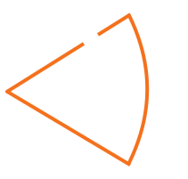

Segundo, consideremos un anillo cargado uniformemente.
Primeramente, seleccionemos un diferencial de carga del anillo. La mejor opción
es en el lado izquierdo o
derecho para facilidad propia de la explicación (es como cuando seleccionábamos la posición de la
partícula
en el movimiento circular, esto fue dicho por un alumno del 5IV3, en la clase del 29 octubre del
2022).
Habiendo seleccionado el diferencial de carga, el cual es uno de los elementos a considerar dentro del campo
eléctrico, ubicamos el punto donde queremos revisar los efectos eléctricos que produce dicho anillo (la
posición del punto es el otro elemento por considerar dentro del campo eléctrico). Para nuestro caso, el
punto \(P\) está a una distancia \(z\) del eje origen coordenado.
Ahora, el estudio para determinar el modelo matemático lo podemos realizar de dos formas:
- Si sabemos lo que sucederá, calculamos la magnitud del campo eléctrico.
- Proponiendo el vector del campo eléctrico.
FORMA 1:
Sabemos que, por simetría las componentes sobre los ejes “\(X\)” y “\(Y\)” se cancelan, quedando solamente las
componentes sobre el eje “\(Z\)”. Entonces:
\[
\left\| d\vec{E} \right\| = \left\| d\vec{E}_z \right\|
\]
\[
\left\| d\vec{E} \right\| = \frac{1}{4 \pi \varepsilon_0} \frac{dq}{R^2} \cos \theta
\]
Como ya sabemos que vamos a usar distribuciones de carga continua entonces, usamos el concepto densidad de carga
lineal, para este caso:
\[
\lambda = \frac{dq}{dl}
\]
\[
\left\| d\vec{E} \right\| = \frac{1}{4 \pi \varepsilon_0} \frac{\lambda dl}{R^2} \cos \theta
\]
\[
\text{Además, } R^2 = r^2 + z^2 \text{ y } \cos \theta = \frac{z}{\sqrt{r^2 + z^2}}, \text{ entonces: }
\left\| d\vec{E} \right\| = \frac{1}{4 \pi \varepsilon_0} \frac{\lambda dl}{r^2 + z^2} \left( \frac{z}{\sqrt{r^2 +
z^2}} \right)
\]
\[
\left\| d\vec{E} \right\| = \frac{1}{4 \pi \varepsilon_0} \frac{z \lambda dl}{(r^2 + z^2)^{3/2}}
\]
\[
\left\| \vec{E} \right\| = \int_0^l \frac{1}{4 \pi \varepsilon_0} \frac{z \lambda dl}{(r^2 + z^2)^{3/2}}
\]
Observamos que la única variable es “\(l\)”, entonces:
\[
\left\| \vec{E} \right\| = \frac{z \lambda}{4 \pi \varepsilon_0 (r^2 + z^2)^{3/2}} \int_0^{2\pi r} dl
\]
\[
\left\| \vec{E} \right\| = \frac{z \lambda}{4 \pi \varepsilon_0 (r^2 + z^2)^{3/2}} \left[ l \right]_0^{2\pi r}
\]
\[
\left\| \vec{E} \right\| = \frac{z \lambda}{4 \pi \varepsilon_0 (r^2 + z^2)^{3/2}} \left[ 2\pi r - 0 \right]
\]
\[
\left\| \vec{E} \right\| = \frac{z \lambda}{4 \pi \varepsilon_0 (r^2 + z^2)^{3/2}} \left[ 2\pi r \right]
\]
Éste ya sería un resultado valido por tener en su expresión solamente datos y constantes.
pero: \(2\pi r \lambda = q\), entonces:
\[
\left\| \vec{E} \right\| = \frac{zq}{4 \pi \varepsilon_0 (r^2 + z^2)^{3/2}}
\]
Realicemos algunas consideraciones particulares:
- si \(z>>r\) (el punto “\(P\)” está muy alejado del anillo), la expresión anterior se reduce a:
\(
\left\| \vec{E} \right\| = \frac{q}{4 \pi \varepsilon_0 z^2}
\)
, expresión semejante al campo generado por una carga puntual.
- si \(z=0\), entonces: \(E=0\)
FORMA 2:
Consideremos ahora la cantidad vectorial y no su magnitud, para esto es necesario considerar los tres ángulos que forma el vector \(r\) con los ejes coordenados. Lo anterior es un trabajo vectorial demasiado extenso.
Trasladando el vector \(R\) al origen, tendremos:
\[
\vec{E} = \int_0^{360^\circ} \frac{1}{4 \pi \varepsilon_0} \frac{dq}{R^2} \left( \cos \theta_1 \hat{i} + \cos \theta_2 \hat{j} + \cos \theta_3 \hat{k} \right)
\]
\[
\vec{E} = \int_0^{2\pi r} \frac{1}{4 \pi \varepsilon_0} \frac{\lambda \, dl}{r^2 + z^2} \left( \cos \theta_1 \hat{i} + \cos \theta_2 \hat{j} + \cos \theta_3 \hat{k} \right)
\]
\[
\vec{E} = \int_0^{2\pi r} \frac{1}{4 \pi \varepsilon_0} \frac{\lambda \, dl}{r^2 + z^2} \left( \frac{r}{\sqrt{r^2 + z^2}} \hat{i} + \frac{z}{\sqrt{r^2 + z^2}} \hat{j} + \frac{r}{\sqrt{r^2 + z^2}} \hat{k} \right)
\]
Falta análisis ... Lo hacen los alumnos.😊
Nota:
Matemática para realizar algunos problemas donde tenemos mediciones angulares y lineales.
Para realizar mediciones que relacionan tanto medidas angulares como lineales usamos la siguiente relación:

Nota del 27 junio del 2021.